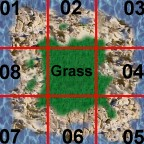
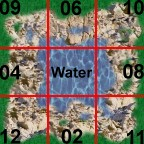
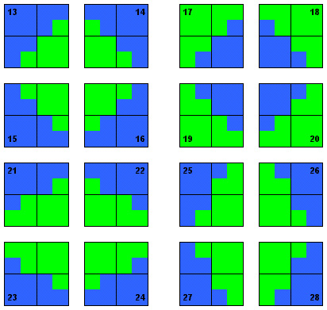

|
Themeability:
|
All of Boson's graphics will be completely themeable. That means not only that you can change "skins" whenever you like, but it also means that you can combine different themes in one game.
There are two kind of themes : ground themes to change the look of the place you're fighting on, and species themes so that every player may choose his specy.
Currently, only one ground theme ("earth") and one specy theme ("human") is available.
To give others a possibility to start creating themes before Boson is released as a playable version and to make theme-creation in general easier, this page describes the file formats, directory structures and naming conventions.
|
|
Directory structure :
|
The best way to understand the tree structure and the naming convention is of course to download and unzip the boson-pics-*.tgz file and have a look at it.
$(KDEDIR)/boson/map : some maps for server and editor (basic.bpf is the default one for server)
$(KDEDIR)/boson/pics : generic pictures for boson
$(KDEDIR)/boson/themes : themes as described now :
Subdirectories of $(KDEDIR)/share/apps/boson/themes
There are two kinds of themes
grounds In those themes, there are all pixmaps needed to render the battlefield : grass, desert,
water and so on..
species In those themes, those are the pixmaps used to draw all player's unit : Facilities, mobile units like airplanes, tanks, harvesters.. Different players will usually use different species theme, making it clear to whom each unit belongs to.
Presently, there are only one ground theme earth, and one specy theme human. Different users have different colors.
grounds/earth/
desert_water/desert_water.AA.BB.bmp
dwater_water/dwater_water.AA.BB.bmp
grass_desert/grass_desert.AA.BB.bmp
grass_water/grass_water.AA.BB.bmp
desert.BB.bmp :
dwater.BB.bmp :
grass.BB.bmp :
grass_oil.BB.bmp :
water.BB.bmp :
water_oil.BB.bmp :
desert_water files are the transistions tiles, see a better description later.
AA is from 01 to 28, the meaning is described later.
BB is in {00, 01, 02, 03}, and are different instances of the same pixmap. (and permits
smoother ground, with less tile effect)
species/human/
units/
explosions/
big/big.CC.bmp : CC is in [00..15]
shot/explosionDD.pEm : DD is in [00..17], E is b(mask) or p (actual image)
facilities/
aircraft/
mineralharvester/
oilharvester/
quad/
ship/
units/
cmdbunker/
helipad/
powerplant/
repairpad/
turret/
barracks/
comsat/
oiltower/
refinery/
samsite/
warfactory /
In every facilities or units directory (as units/turrert/ ), there are two files
overview.big.bmp(100x100 pixels) and overview.small.bmp(50x50).
In every facilities directory, we find field.GGG.bmp. GGG is in [000..003]
In every units directory, we find field.FF.bmp. FF is in [00..11]
This tree is still subject to change, so please check back from time to time.
|
|
|
File formats and other specifications:
|
- All images for Boson are made in the Bitmap (*.bmp) format with true color (32 bit).
- The bitmaps for the terrain all have a size of 48 x 48 pixels (or 96 x 96 pixels for transitions & decorations). There are four different types of terrain: grass, desert, water and deep water.
- Most buildings have a size of 2x2 sprites, which is 96 x 96 pixels. Other themes have to use the same sizes. Some buildings have different sizes.
- The size of Unit-bitmaps is pretty much unique and depends solely on the dimensions of the unit.
- All facilities have four different construction bitmaps. The first bitmap just shows the base of the buildings, in the last bitmap the buildings is completely constructed.
- All buildings are shown from a 20 degree X / 20 degree Y angle (pseudo - isometric view).
- For buildings that need to rotate (i.e. SamSite) and all units, there are 12 different bitmaps for each rotational position (0-11 o'clock) with 30 degrees of difference in each. Units are viewed from the pseudo isometric angle, too.
- For buildings / facilities, the background needs to be transparent, so that they can be placed on any ground. This is achieved by giving the background a predefined color (R: 255 | G: 000 | B: 255), so that Boson can then create transparency-masks on loading.
- For both buildings and units having a team color, we need to define a color (R: 000 | G: 255 | B: 000) in the bitmaps, which is later replaced by the chosen team-color.
|
|
Transitions:
|
Every Boson's theme has four different grounds (grass, desert, water and deep water). To use all these grounds, we need to create transitions between them (beach between grass and water etc.).
The transitions for the grounds have the following naming : "[GroundA]_[GroundB].[position].[version].bmp"
For example: grass_desert.01.00.bmp ; grass_water.05.01.bmp ; water_desert.09.02.bmp ; dwater_water.12.03.bmp
The version is a number between 00 and 03. There are four versions of every transition, to avoid a tiling - effect. The position - numbers are defined in the following pictures:
 
There are also transitions that use a size of 2x2 sprites (96x96 pixels). Here are the position definitions:

|